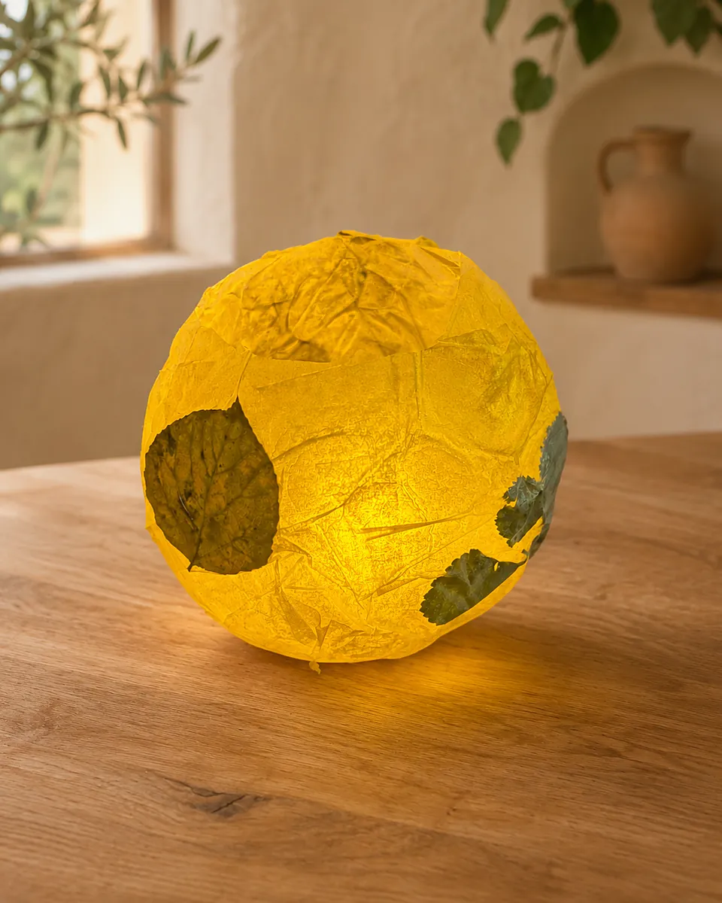
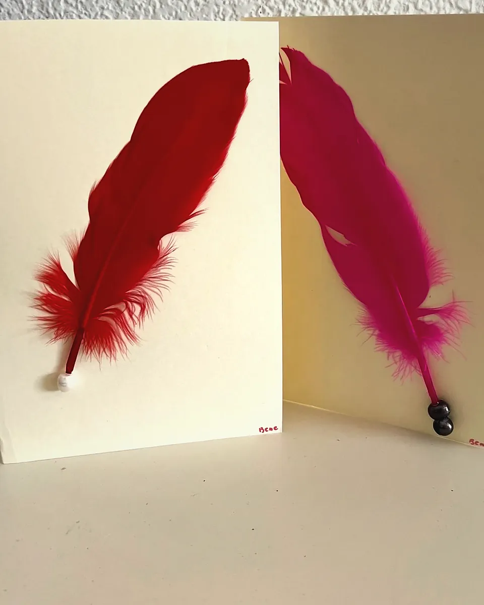

Cosas hechas a mano, con mucho cariño
Hola, soy Bene. Hago cosas con mis manos porque me encanta y porque nunca me faltan ideas. Me gusta probar materiales, mezclar colores y dar una segunda vida a objetos que iban a tirarse.
Cada pieza es única: no hay dos iguales.
Lo que hago
- Faroles y lámparas
- Collares, colgantes y pulseras
- Servilleteros y detalles para la mesa
- Tarjetas pintadas a mano
- Decoración para casa
- Objetos nuevos a partir de cosas viejas, como discos de vinilo
- Encargos personalizados
Algunas ideas
Una pequeña muestra de cosas que se me han ocurrido.




Contacto
¿Te gusta algo o tienes una idea? Escríbeme por cualquiera de estos sitios.